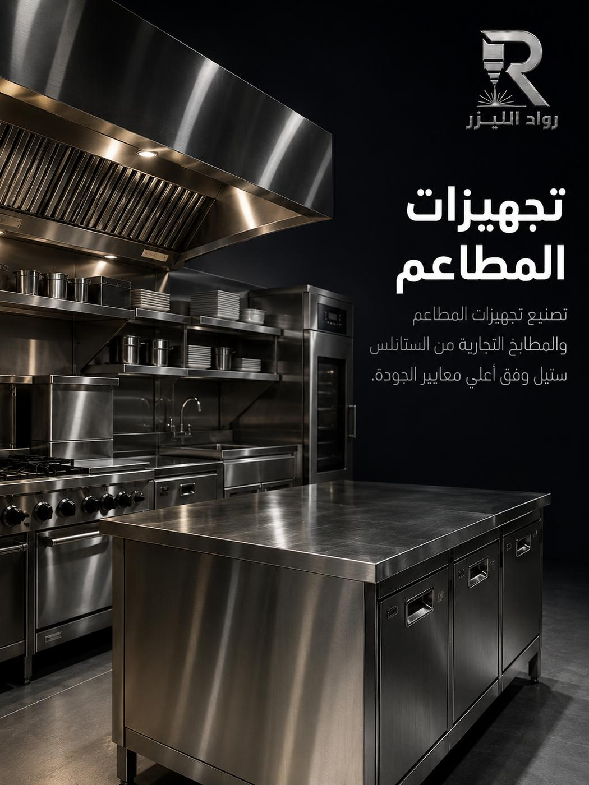
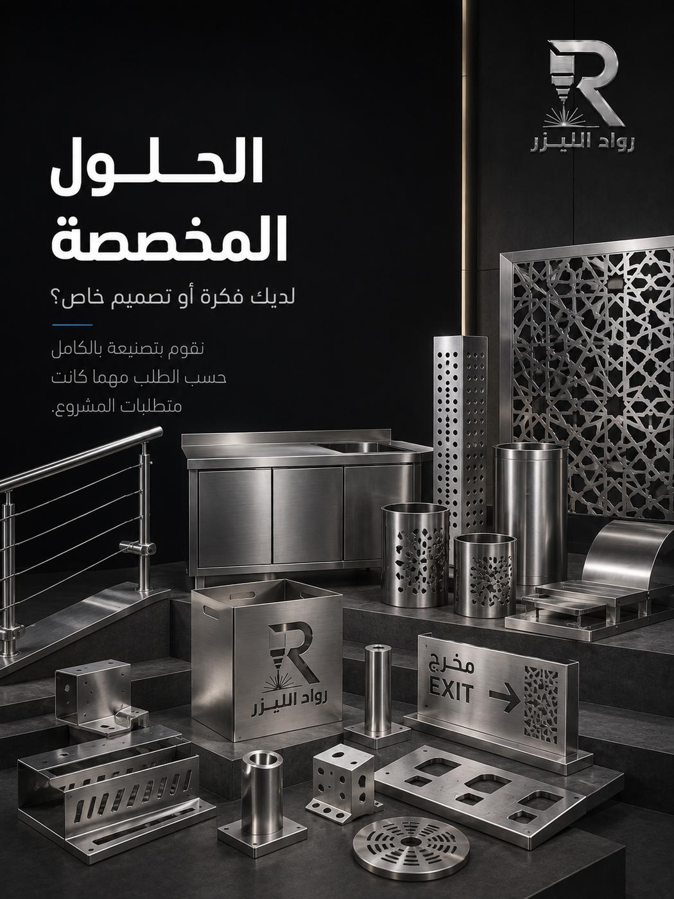
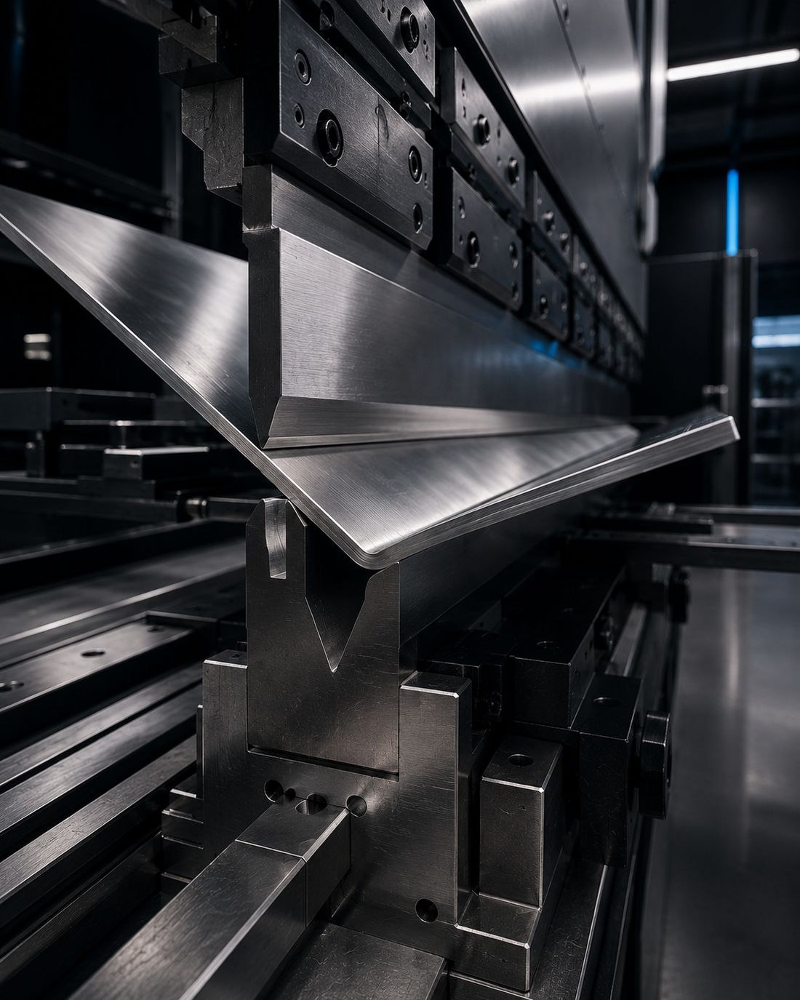

طاولات التحضير
أسطح بلا وصلات ظاهرة، بحواف مطوية وأرجل قابلة للضبط، وبعرض يناسب ممر مطبخك.
المطبخ التجاري بيئة قاسية: ماء، حرارة، دهون، ومواد تنظيف قوية يومياً. نصنع الطاولات والأرفف والأحواض من الستانلس بمقاسات مطبخك الحقيقية وبتفاصيل تسهّل التنظيف — لأن التجهيز الذي لا يمكن تنظيفه بسرعة يفشل مهما كان متيناً.

أصحاب المطاعم يشترون التجهيزات بالمقاس والسعر، ثم يكتشفون خلال أشهر أن المشكلة كانت في التفاصيل: زاوية داخلية حادة تتجمّع فيها البقايا ولا يصلها الإسفنج، سطح مستوٍ تماماً فيبقى الماء عليه بدل أن يصرّف، لحام غير مصقول يتحوّل إلى خط أسود ثم إلى صدأ، أو رفّ يهتزّ عند تحميله بالكامل.
لهذا نصمّم التجهيزات لفكرة واحدة: أن تُنظَّف بسرعة وأن تتحمّل. زوايا داخلية بنصف قطر يسمح بمرور القماش، ميل خفيف في الأسطح المبلّلة نحو نقطة التصريف، لحام مستمر ومصقول بدل نقطي يترك فراغات، وسماكة وأرجل محسوبة على الحمل الفعلي لا على المتوسط.
أما المقاس فهو الميزة الأكبر في التصنيع المخصص: المطابخ التجارية في جدة نادراً ما تكون مساحاتها قياسية. نأتي من المقاس المتاح فعلاً — عرض الممر، ارتفاع النافذة، موضع مخرج الصرف — فتخرج الوحدة لتناسب المكان دون فراغات ودون قصّ في الموقع.
أسطح بلا وصلات ظاهرة، بحواف مطوية وأرجل قابلة للضبط، وبعرض يناسب ممر مطبخك.
أرفف مثبّتة أو حرّة بحمولات محسوبة، وارتفاعات مناسبة للوصول السريع أثناء الخدمة.
أحواض بعمق مناسب وميل تصريف صحيح، ووصلات محكمة لا تسرّب تحت الوحدة.
ألواح شفّاط وقنوات بمقاسات فتحة السحب، تُنفَّذ من الستانلس أو المجلفن حسب الموقع.
الصفائح المجلفنة للدكتاتأسطح وواجهات ظاهرة للعميل بتشطيب مصقول متجانس يخفي البصمات والخدوش الخفيفة.
لوحات تعريف وأرقام أصول وتعليمات نظافة منقوشة بشكل دائم على الوحدات.
الحفر والنحت على المعادن| البند | الخيارات | توصيتنا للمطبخ التجاري |
|---|---|---|
| الدرجة | 304 أو 316 | 304 لمعظم الوحدات، و316 للمناطق شديدة الرطوبة أو التماس المستمر بالمنظّفات القوية. |
| سماكة السطح | تحدّدها الحمولة وطول المسافة بين الدعامات. | سماكة أعلى للأسطح التي يُقطع أو يُطرق عليها، مع دعامات وسطية للأسطح الطويلة. |
| التشطيب | مصقول أو 2B | مصقول للأسطح المستخدمة، لأنه يخفي الخدوش اليومية أفضل من السطح الأملس. |
| طريقة اللحام | مستمر مصقول أو نقطي | مستمر ومصقول في كل ما يلامس الغذاء أو الماء، لأنه لا يترك شقوقاً. |
| الأرجل | ثابتة أو قابلة للضبط أو عجلات | قابلة للضبط للاستواء على أرضية مبلّلة غير مستوية، وعجلات للوحدات التي تُحرَّك للتنظيف. |
أرسل مقاسات المساحة وصورة للمكان، ونرشّح لك المواصفة المناسبة قبل التسعير — وسنقول لك إن كانت مواصفة أقل تكفي.
 طاولة تحضير
طاولة تحضير
وحدات متنوعة جاهزة للتسليم
جاهزة للتسليم المادة الخام
المادة الخام
ثني الأسطحالصور نماذج وتصورات بصرية توضح إمكانيات الخدمة.
أرسل مقاس المساحة المتاحة وصوراً للمكان، بما يشمل مواقع الصرف والكهرباء إن كانت مؤثّرة.
نتفق على الدرجة والسماكة والتشطيب والملحقات، ونوضّح أثر كل خيار على السعر.
قص وثني ولحام وتلميع، ثم تركيب الأرجل والأرفف والتحقق من الاستواء والثبات.
ننسّق موعد التسليم مع أوقات إغلاق المطعم قدر الإمكان لتقليل تعطيل العمل.
الخدمة الأم: كل ما يُصنع من الستانلس داخل المطبخ وخارجه.
اذهب إلى الصفحةإن كنت تحتاج ألواحاً مقصوصة فقط لتتولّى التجميع بنفسك.
اذهب إلى الصفحةواجهة المطعم ولافتته المعدنية بنفس مستوى تشطيب التجهيزات الداخلية.
اذهب إلى الصفحةنصنع بمقاسك. هذه الميزة الأساسية للتصنيع المخصص: لا فراغات ضائعة ولا وحدة أكبر من الممر. أرسل مقاس المساحة وسنصمّم الوحدة لتناسبها تماماً.
نستخدم درجات الستانلس المعتمدة في تجهيزات المطاعم (304 و316)، وهي المستخدمة عالمياً في أسطح التحضير. والأهم من الدرجة هو التنفيذ: لحام مصقول وزوايا قابلة للتنظيف حتى لا تتجمّع البقايا.
الاثنان. نقبل طلب طاولة واحدة، كما ننفّذ تجهيز مطبخ كامل بقائمة وحدات وجدول تسليم على مراحل يناسب موعد الافتتاح.
نسأل عن عرض أضيق ممر أو باب في المسار قبل التصنيع. وإن كانت الوحدة أكبر، نصمّمها لتُجمَّع في الموقع من أجزاء أو نضيف وصلات قابلة للفكّ.
نوضّح ذلك في العرض. كثير من الوحدات تُسلَّم جاهزة للاستخدام مباشرة، أما ما يحتاج ربطاً بالسباكة أو الكهرباء أو الشفّاط فيُنسَّق بشكل واضح ومحدد في العرض.
أرفق مقاس المساحة وصورة للمكان وقائمة الوحدات المطلوبة، ونعيد لك عرضاً مفصّلاً لكل وحدة.
أرسل مقاسات المساحة وقائمة ما تحتاجه، ونعيد لك سعراً وجدول تسليم يناسب افتتاحك.